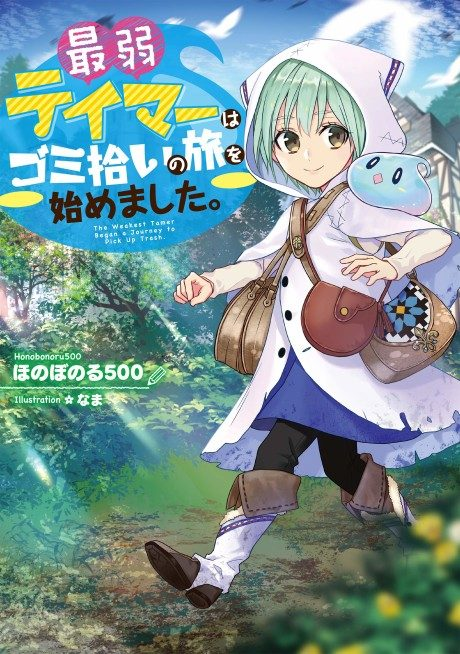

Light novel continues fromVol. 3
Anime
Light novel continues fromVol. 3
Anime
Light novelThe Weakest Tamer Began a Journey to Pick Up Trash
最弱テイマーはゴミ拾いの旅を始めました。
AniList7.4
Animeter—
Episodes12 ep
SourceVol. 3
Anime finished. Where does the story go next?
Start at Volume3
Start the light novel at volume 3 after the anime.